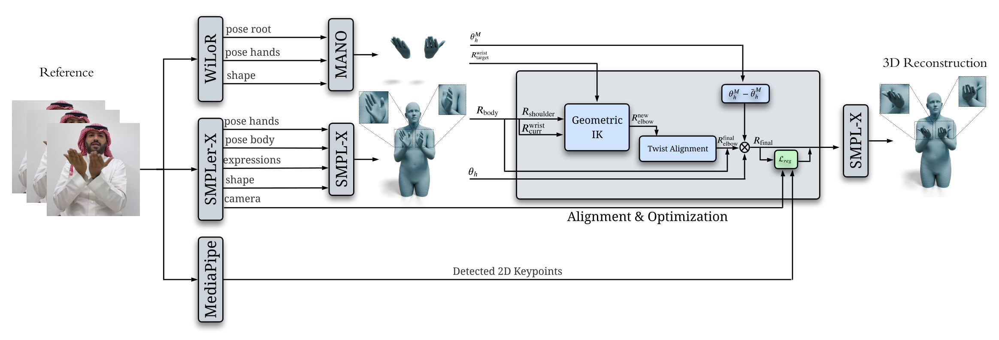
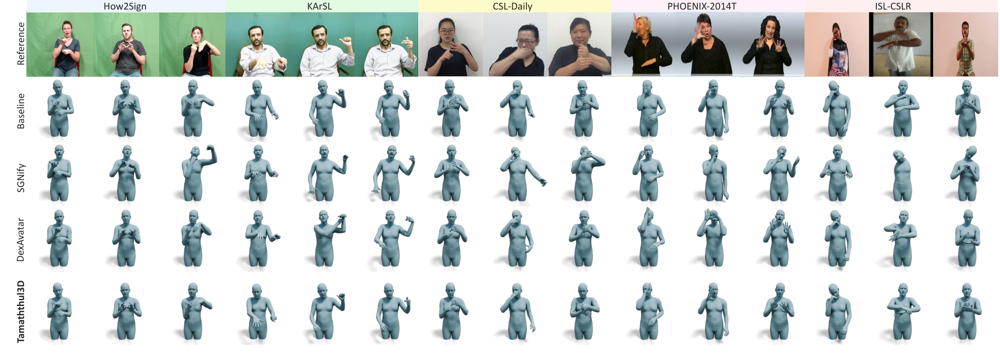

Existing 3D sign language avatar reconstruction methods are developed and evaluated exclusively on Western sign languages, and no 3D parametric annotations exist for any Arabic Sign Language dataset — a gap that blocks the development of avatar-based accessibility applications for the Arab Deaf community. We release the first SMPL-X parametric annotations for the Ishara-500 Saudi Sign Language dataset, enabling quantitative evaluation and downstream sign language generation for Arabic Sign Language.
We introduce Tamaththul3D, a reconstruction pipeline that aligns hand and body estimates through geometric inverse kinematics on the forearm chain followed by 2D-supervised shoulder refinement. The closed-form integration is decoupled from the specific choice of body and hand estimators: any SMPL-X-compatible body estimator and any MANO-compatible hand estimator can be substituted. Tamaththul3D achieves up to 32% lower hand error than prior methods, runs 32× faster than the strongest baseline, and generalizes across five typologically distinct sign languages without dataset-specific adaptation.

Tamaththul3D reconstructs expressive 3D avatars from monocular RGB video by decoupling hand and body estimation and fusing them through geometric inverse kinematics. Three complementary modules extract per-frame features: SMPLer-X estimates whole-body SMPL-X parameters, WiLoR reconstructs detailed hand poses in MANO format, and MediaPipe provides confidence-weighted 2D keypoints. A closed-form geometric IK solver then aligns the forearm kinematic chain with WiLoR's accurate global wrist orientation (recovering forearm twist via swing-twist decomposition), and a 2D-supervised shoulder refinement resolves shoulder-forearm inconsistencies without disrupting hand accuracy. Because the integration is closed-form, any SMPL-X body estimator and any MANO hand estimator can be swapped in without re-deriving the alignment.
Tamaththul3D is a fully closed-form pipeline with no learned parameters of its own, so it applies across sign languages without dataset-specific adaptation. We evaluate generalization on five sign language datasets spanning four languages and three continents: How2Sign, KArSL, CSL-Daily, PHOENIX-2014T, and ISL-CSLTR. SGNify and DexAvatar — which rely on learned priors tuned to Western signing — produce severe kinematic artifacts on out-of-distribution styles, while our geometry-driven approach remains unaffected by the distribution shift.

Generalization across five datasets. Rows: reference, SMPLer-X, SGNify, DexAvatar, and Tamaththul3D (ours).
Per-frame reconstruction methods produce visible jitter. Our temporal smoothing yields substantially more stable avatars — reducing hand jitter by 83.2% and body jitter by 83.9% relative to DexAvatar — while preserving genuine sign articulation.
Tamaththul3D (Ours)
DexAvatar
Tamaththul3D achieves state-of-the-art hand accuracy, recovering the precise finger configurations and palm orientations that make signs legible. Below we contrast our reconstructions against prior methods on the same input sequence.
Tamaththul3D (Ours)
DexAvatar
SGNify
@article{alghamdi2026tamaththul3d,
author = {Alghamdi, Eyad and Altuuaim, Sattam and Ghulam, Obay and Qutah, Abdulrahman and Basoodan, Yousef},
title = {Tamaththul3D: High-Fidelity 3D Saudi Sign Language Avatars from Monocular Video},
journal = {arXiv preprint arXiv:2605.05367},
year = {2026},
}